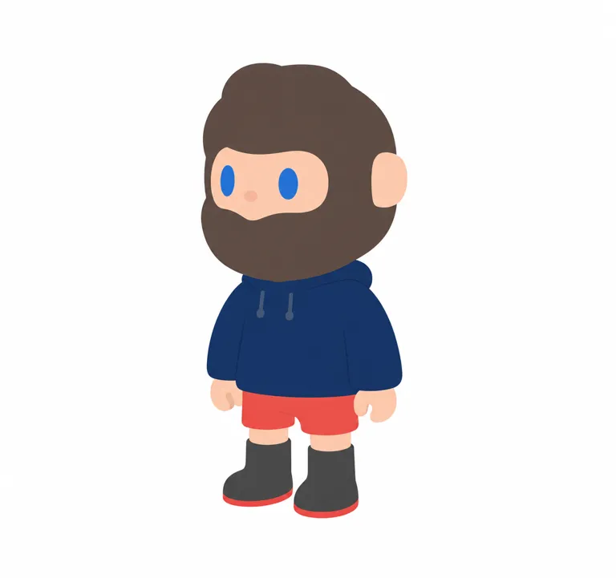

先稳住头脸，再换主题
多款图像中，头发与胡须围出脸口的关系反复出现。衣装、色彩和道具可以变化；QQ 联名甚至把合作角色放到后脑外层。
视觉观察与机制推断；未做用户盲测。[S03]
不同的人生角色，
同一张被胡须包住的脸。
从艺术家玩具到主题盲盒与毛绒，研究它如何在变化中保持身份，也检查“收藏热度”能否证明真实需求。
看原图与六轮实测 看代表产品
| 字段 | 本次核实 | 边界 |
|---|---|---|
| 作者 | JO YOUNG WOON，韩国；笔名 FARMER [S01] [S09] | 未找到足够一手依据确认中文姓名译法。 |
| 发行合作 | FINDING UNICORN 寻找独角兽，2018 年起开发合作 [S01] [S10] | 未取得合同；不声称收购、永久独家或全部著作权归属。 |
| 起点 | 2014 发表；2013 诞生见转载作者访谈 [S01] [S09] | 两条记录并列，不编造精确生日。 |
| 名称来源 | 合作方文档追溯到画家 Bob Ross 与音乐人 Bob Marley [S01] [S03] | 只在研究正文说明；不写进可执行出图提示词。 |
艺术家手作、批量发行、联名和鞋服是不同节点；不把2018年合作当成角色出生年。
四张代表资料覆盖多款实物、作者工作照、联名渲染与情绪主题。原图均保留来源入口，生成图另列。缺少标准母版三视图和首发原始档案。

棕发与胡须连成厚头部，肤色脸口横向展开；竖椭圆眼、突出鼻、口部被覆盖。末排第4格为深蓝卫衣、红裤、灰靴红底。多款保留类似脸口与粗短四肢，但发色、衣色和配件变化。
解释（推断） 头部的色块拓扑比某一种发色更稳定；这是跨样本观察，不是品牌标准手册。
可见多款有镜面反光和圆润体块；没有对应完整物料表，不能仅凭照片判断全部是同一种树脂或搪胶。
拼图2000×1027；单格约330px，目标为轻微三分之四角度，细部和表面工艺有限。
未取得该目标款确切SKU名及首发日期；不称其为官方基础母版。

右侧两只角色分别有黄色／淡紫色头发胡须、相似蓝色眼睛与脸部开口。服装和帽子有差异，体块均圆润，站姿相近。
解释（推断） 身份允许换色；黄色或紫色不是全IP必须保留的签名色。
表面有强高光；照片无尺寸尺，不据此填写身高或基材。
室内三分之四角度，照片暖光影响色彩，非官方三视图。
不将作者工作照解读成作品首次发表档案。

黄色胡须与小脸位于厚白色围帽内部；身体为黑白配色、黄靴。背面企鹅形状主导后脑，双面识别。
解释（推断） 用服装外层承接合作方，同时保留脸口；属于此联名的设计机制。
文中明示为3D效果图。不能把渲染里的柔软感当成量产织物触感。
同框正侧与后侧，灰背景、软阴影。是该联名款，不能补全普通款背面。
本图是研究引用，不是本次生成的三维延展。

头顶和底座加入爆炸烟云，头部橙红到黄色，眼睛红色；同样保留小脸开口、耳朵和大胡须结构。
解释（推断） 蓝眼是高频候选而非绝对规则；此款直接以颜色与道具外显情绪，不能概括全IP永远面无表情。
画面有强高光和复杂表面；未确认实拍／合成的完整制作流程，不能据此推断量产耐用性。
暖色布景、倾斜相框与火焰同时放大情绪；环境颜色不能计入本体色板。
遮挡身体与复杂主题使它不适合本轮基础轮廓复现。
| 层次 | 较稳定的观察 | 允许变化／已见反例 |
|---|---|---|
| 原型与轮廓 | 类人、大头短壮；胡须与童偶比例产生反差 | 毛绒头部载体会删减身体；不同款式比例仍需单独检查。 |
| 头脸组合 | 头发—鬓角—胡须围出小脸；竖椭圆眼和小鼻 | 发型会改变，眼色并非始终蓝；主题可添加眉或其他表情。 |
| 系列变量 | 同一脸部关系承接多款身份 | 衣色、帽子、底座、透明效果、职业道具不可混写成一套母版。 |
| 表达 | 部分款式低表情密度，便于投射（推断） | 火焰款借红眼、爆炸道具显露愤怒；不是全部无情绪。 |
灰棕
#62534B
头发／胡须
浅桃
#EDB593
脸、耳、手、膝
钴蓝
#3278B5
眼
海军蓝
#263F58
卫衣
珊瑚红
#DF5D59
短裤及鞋底
炭灰
#44464A
靴子
以上仅为目标棕发卫衣款的屏幕目测近似色，不是官方色号。未做主体分割，不报面积百分比；背景未纳入。灰度、缩略图识别与实物色卡均未验证。
摆件、收藏型联名、毛绒与鞋服扩展的是不同场景。材料、尺寸、地区价格分别记录，不能用一种规格概括全系列。
| 代表产品 | 尺寸与构成 | 价格口径 | 限制／证据 |
|---|---|---|---|
| 2018 白金 BOB | 9 × 5.5 × 4.5 cm；601 体限定 | 历史中国参考价 ¥469 | 同期媒体列 PVC／PMMA／金属，部分可能属展示包装；不能当全身材质。[S10] |
| QQ 联名 150% | 12 cm；限定 151 体 | 价格未核实 | 原文含渲染；编号是供应制度，未见成交统计。[S03] |
| ICE LIQUID WITH BOB | 限定 201 体；日方抽选分配50体 | 2021 日本 ¥63,800 JPY；运费另计 | 冰晶部件与收藏型结构；本体尺寸、完整材质未知。[S01] [S02] |
| Feeling You 盲盒 | 约8.7–13.4 cm；12常规＋2隐藏 | 日本零售标价 ¥2,090 JPY 含税 | 2026-10-19访问；促销随页变化，不当中国官方定价。[S07] |
| ANI-MONSTER 毛绒 | 16–18 cm；9常规＋1隐藏 | 日本目录建议价 ¥3,400 JPY 未税 | PVC、ABS、聚酯；日本2026年6月目录信息非全球首发。[S05] |
| MINI-DRAGON MIRAGE | 10–12 cm；6常规＋1隐藏 | 日本目录建议价 ¥2,400 JPY 未税 | PVC、ABS、聚酯；迷你头部载体，日本2026年4月目录。[S06] |
| 观察 | 能支持什么 | 不能推出什么 |
|---|---|---|
| 收藏帖：作者晒大量收藏，回复谈展柜难容纳 [S18] | 陈列与系列收藏是真实使用场景；空间是产品负担。 | 不能推算典型收藏数量、复购率或人口画像。 |
| 男友系列开箱：喜欢涂装，也提配件易遗失 [S17] | 小配件管理是具体体验问题。 | 单个样本不能证明整体品控优秀或差。 |
| 2023海岛系列二手回落报道 [S16] | 历史局部交易预期会波动。 | 不是2026年实时价格，更不能断言IP已失败。 |
| 2023第三方抽盒平台拆盒争议 [S15] | 购买渠道与盒况影响信任，需区分官方与转售。 | 不能归为寻找独角兽自营售假；未核诉讼结果。 |
胡须脸口形成识别；“自主体验生活”是结合作者叙述的解释。不要把有特色的造型直接当成用户接受了哲学。
路人可能先接受圆润与平静；收藏者可能在版本、艺术来源和编号里找意义。这是待验证的分层假设，没有年龄性别配比。
主题偏好、供给限制、渠道可得性都可能驱动购买。当前证据无法分离它们与角色表达各自的贡献。
这些文字是根据可见作品重建的研究提示词，并非作者原始提示词，也不表示原作由AI制作。目标固定为 V01 末排第4格；未取得准确款名，不能称为“官方基础版”。
身份轮廓、小脸开口、无外露嘴、蓝椭圆眼及服装色区已接近目标。鼻子改为小圆鼻、抽绳回深蓝灰、鞋底收细。剩余：发顶小丘较圆、耳朵与手较简化；原格分辨率限制，不能认定精确复刻。
['V01', 'generated:reference-v3']
第一张是目标资料拼图；第二张是上一轮生成图。修改第二张平面图，目标仍是第一张拼图最下排从左数第4格的棕发、深蓝卫衣、红短裤、灰靴角色。保留第二张已经接近的头身比例、站立角度、头部和胡须轮廓、蓝眼位置、棕发、肤色脸、深蓝上衣、红裤和灰靴。只修正三处：1. 胸前两条白抽绳必须改成低对比深蓝灰色，与衣服接近，形状细而短，不出现任何白色胸前元素或标志。2. 鼻子由横向扁条改成小小的浅桃圆鼻，宽度略小于眼睛宽度，不是红鼻、不夸大。3. 两只靴底的红边再收细为窄线。保持整幅为白底二维平涂色块，不要高光阴影、毛发线条或立体渲染。不能添加文字、品牌或场景。只输出一个完整全身角色。
不能宣称纯文字可复现、标准正面母版、精确尺寸／工艺、英文提示词已测或可直接量产。图上的细小简化与源图分辨率限制仍保留。
| 层次 | 交付内容 | 当前状态 |
|---|---|---|
| 研究性样本描述 | V01—V04逐图说明、色彩范围、材质与摄影分开 | 已完成；有来源与限制 |
| 机制卡 | 稳定头脸关系→降低换装识别成本→承接系列主题；遮嘴留白→投射空间（有反例） | 研究推断，未做消费者实验 |
| 原创转译 | 应另定义原点、态度、用户、首产品与独立识别组合 | 尚未开始，不能把原角色换色当原创 |
可借身份稳定与生活角色变化的表达机制；先验证目标用户真实场景，不套用年龄性别。
借识别集中与变量分层；不能搬头发胡须包小脸口的完整组合。
每个SKU单独拆颜色、材料与载体；先看实际空间和配件管理，再决定大娃或挂件。
黑白找形 zh/en、平面设定 en、实物概念 zh/en 未生成未验证，不放入可用提示词区。本轮仅对既有样本进行中文二维研究复现。
官方与合作方资料、发行商商品说明、媒体访谈、用户个案分开使用。18条来源不是18条独立销量证据。访问受限与摘要来源保留明确标记。
交付前完成结构、下载路径、脚本语法与版本切换逻辑校验；当前环境未提供网页浏览器视觉测试，移动端布局尚未人工实看。